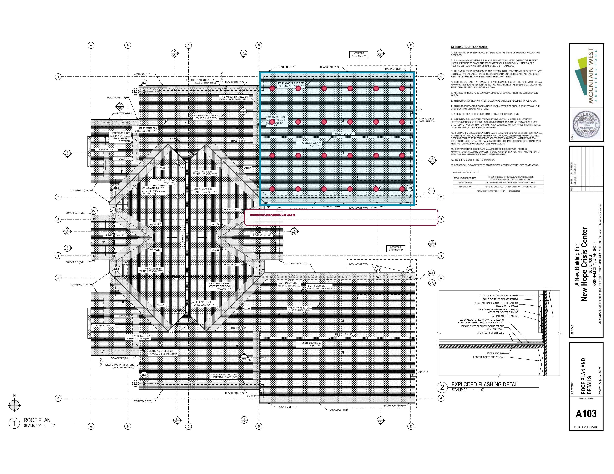
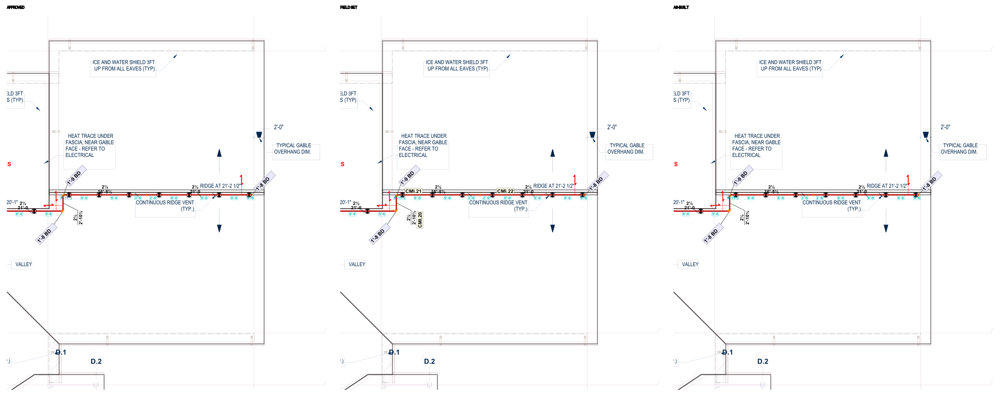
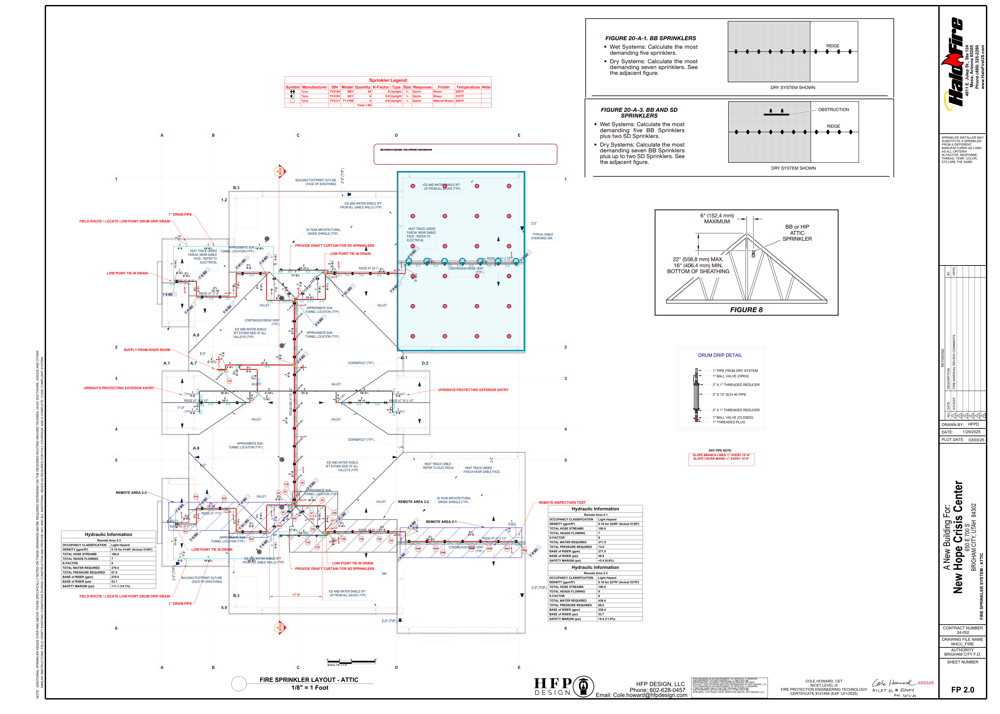

4:12actual A103/A301 pitch
43 x 60.75 ftregistered occupied gable
24 predictedfrozen source candidate
7 approvedridge-line answer
Topology failednot production ready




System-owned correction loop
Primary replayFrozen 24-target candidate versus seven-head approved ridge row.
Cross-source loopApproved, field, and as-built FP2.0 independently preserve the same bounded answer.
Adversarial loop19 receipt, sequence, answer, count, topology, score, and false-promotion mutations are rejected.
Acceptance remains closed
The next implementation must extract exact roof-truss/member geometry and use a ridge/member-aware placement policy. New Hope remains answer-exposed calibration only; another untouched pitched-roof project must pass before this capability can be accepted.
freshProjectPlacementVerified=false | exactHeadElevationReady=false | obstructionClearanceReady=false | complianceReady=false | fieldReleaseReady=false